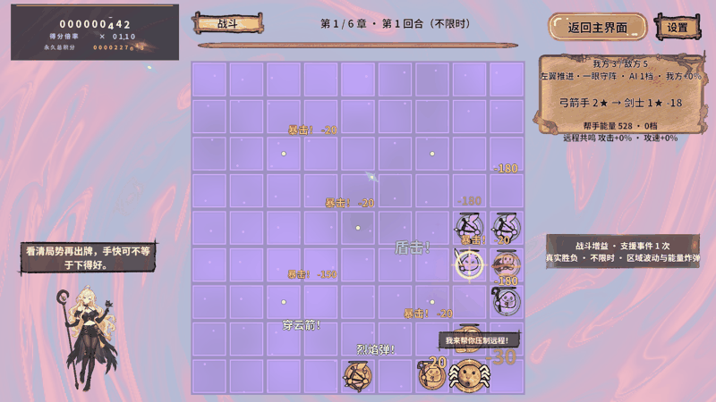
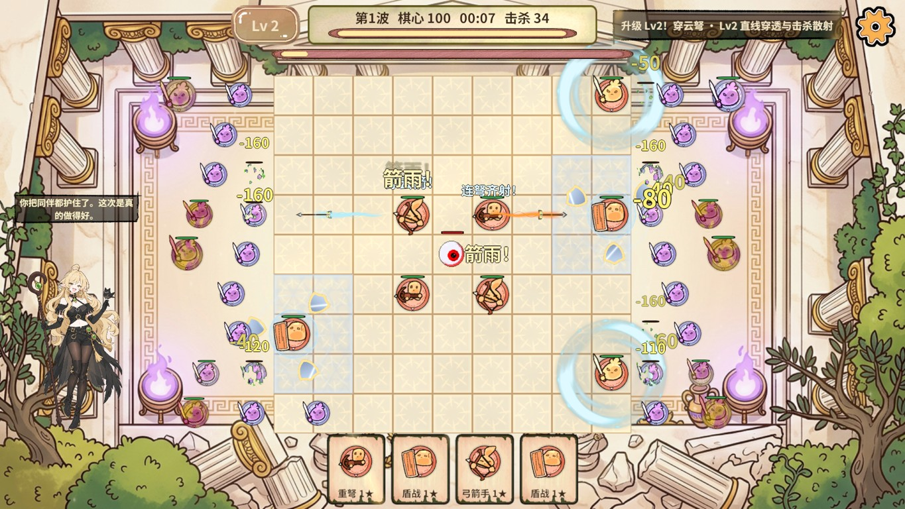
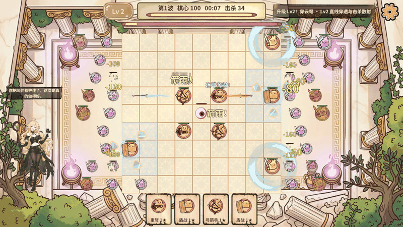
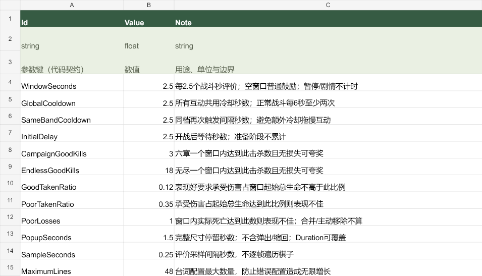

鸦鸦战斗高频互动 · 2026-11-06
正常连续战斗每2.5秒触发一次，完整尺寸停留1.5秒。准备、剧情、过场、教学和暂停阶段不显示。无结算事件的战斗窗口使用普通鼓励，避免互动空档。
Excel是参数源：WindowSeconds、GlobalCooldown、SameBandCooldown、InitialDelay均2.5；PopupSeconds为1.5。36条台词的Duration均0，全部使用默认时长；保留台词和原评价阈值。
实际验收
Unity 2022.3.15f1c1，Windows Editor，真实PC AB冷启动，内存隔离进度，无尽种子1101。47主步骤和3清理步骤通过，日志Error为0。没有调用评价夹具，正常落三张牌并开战；真实事实累计六章55次、无尽97次时已各显示3次。
| 模式 | 最近三次落屏时间（非缩放秒） | 三次跨度 | 完整尺寸停留 | 实际可见总时长 |
|---|
| 六章 | 52.390 / 54.828 / 57.331 | 4.941秒 | 1.5秒 | 1.923秒 |
| 无尽 | 64.846 / 67.332 / 69.832 | 4.986秒 | 1.5秒 | 1.920秒 |
正常总时长为0.24秒弹出＋1.5秒停留＋0.18秒缩回，实测约1.92秒。自然战斗的准备拒绝、暂停隐藏、气泡完整、无重叠、结束释放目录/图集引用均通过，结束后停止Play并解除测试隔离。
真实画面
六章真实自然战斗，左下场景立绘与头顶台词。
六章连续真实截图，帧间隔来自调用耗时，没有补画。
无尽真实自然战斗，立绘不盖棋盤与敌人。
无尽连续真实截图。
修改后的Excel参数。
调用与框架边界
实际调用顺序：rev_discover发现当前Editor/GM/业务；rev_call确认状态、AB模式与隔离；rev_run按真实落牌/开战入口执行有界轮询与业务断言，finally执行yaya.reaction-cleanup、editor.stop、game.story.test-disarm。Unity导表和资源构建使用RevCLI live。
RevLogic＋RevScope管理观察生命周期，RevEvent只消费真实结算事实，RevResManager＋RevPool按显示成对归还，DOTween拥有单次动画。开发态最近三次落屏证据使用固定数组，不写正式存档。本轮文件桥没有错误；历史Sharing violation仍未修复，不能以这轮通过宣称竞争消失。
PC/Android各76包重新构建发布。首次Android构建完成复制，但Unity BuildPipeline报两条Trying to reload asset from disk that is not stored on disk，工单为失败；切到GameScene卸载大厅编辑态预览后复核构建成功。逐包核对发布与构建目录字节/大小一致，最后恢复StartScene。此处记录恢复方法，没有宣称Unity引擎该错误已永久修复。
6秒频率针对连续、可观察且有安全空间的正常战斗。暂停、过场、空间被占用或异步加载迟到仍服从原门禁。后续修改Duration/冷却会影响节奏；Android完成资源构建，真机和手机帧率未执行。
完整配置与历史验收 · 原版互动报告